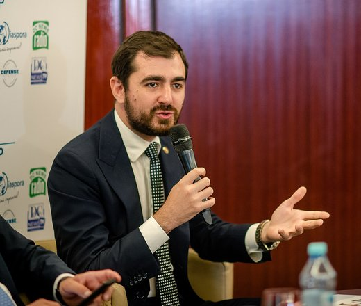

Nu se susține
Politică
2026-09-05
Ministrul Claudiu Năsui a spus că firma tatălui său din Moldova e „închisă din '92, fără activitate” — registrul arată că a fost înființată în 1995 și e activă Nu se susține · 4 probate · 1 contestată https://farabaliverne.ro/a/moldova-nasui-tatal-afaceri-radiotel-registre-contrazic.html
Ministrul Claudiu Năsui a spus că firma tatălui său din Moldova e „închisă din '92, fără activitate” — registrul arată că a fost înființată în 1995 și e activă Claudiu Năsui, fost deputat USR în România, a depus jurământul pe 28 august 2026 ca ministru al Dezvoltării Economice și Digitalizării al R. Moldova. Întrebat de NewsMaker dacă familia sa are afaceri legate de Moldova, a răspuns inițial „Niciuna, nu. Nimic”. Confruntat cu numele unei firme găsite de o investigație Infobiz/Ziarul de Gardă, a spus că a aflat despre ea abia atunci și a descris-o drept închisă din 1992… ✅ Se probează: • Potrivit Registrului de stat al persoanelor juridice din R. Moldova, citat de investigația Infobiz/Ziarul de Gardă, firma RADIOTEL-M S.R.L. (sediu în sectorul Centru, Chișinău) a fost înregistrată în 1995, nu în 1992, și are statutul de societate activă. Acționari sunt… • O a doua firmă, RADIOTEL-MIR S.R.L. (sediu în sectorul Ciocana, Chișinău), înregistrată în 1996, are de asemenea statut activ, cu Dorel-Vasile Năsui și Simion-Ștefan Năsui deținând câte 35% fiecare. ⚠️ Rămâne contestat: • Descrierea pe care Claudiu Năsui a dat-o firmei RADIOTEL-M — înființată în 1992 și închisă de atunci, fără activitate — nu se potrivește cu datele Registrului de stat, care arată anul înregistrării 1995 și statut activ la data investigației. Rămâne posibil ca ministrul să fi… Unde bat probele: nu se susține. Sursele, în articol: https://farabaliverne.ro/a/moldova-nasui-tatal-afaceri-radiotel-registre-contrazic.html
Vezi articolul
224 caractere